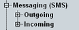

Messaging (SMS) Parameters
The "Messaging (SMS)" section configures parameters of the short message service (SMS). Sending a short message to the UE is triggered via hotkey, see "Connection control hotkeys".

SMS parameters
Contents
The "Messaging (SMS)" section configures parameters of the short message service (SMS). Sending a short message to the UE is triggered via hotkey, see "Connection control hotkeys".
